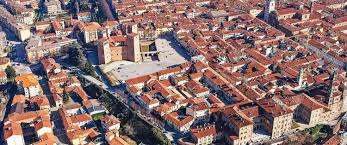

La città di Fossano

Fossano è un comune italiano della provincia di Cuneo in Piemonte. È il quarto comune più popoloso della provincia dopo Cuneo, Alba e Bra.
Fa parte delle cosiddette "sette sorelle", insieme a Cuneo, Alba, Bra, Mondovì, Savigliano e Saluzzo, ovvero i comuni con più di 15 000 abitanti.
Il nome Fossano potrebbe essere la trasformazione dell'appellativo locus o fundus faucianus, dal nome personale romano Faucius, oppure derivare dalla parola fossato, in piemontese fossà, da cui fossan, abitante del fossato. Gli avvallamenti sono infatti caratteristica del colle sul quale sorse il primo borgo cittadino. Gli storici concordano nel parlare di “gran fossato del Chiotto”, in dialetto Ciot, buco, fosso.
Un'altra ipotesi alternativa è che il nome derivi da "fons sana", ad indicare la presenza nelle vicinanze di una sorgente di acqua potabile.
Alcuni recenti ritrovamenti di cocci, avvenuti nel corso della ristrutturazione di edifici del centro storico, lascerebbero supporre che l'altipiano di Fossano fosse già occupato da un insediamento di popolazione abile nella metallurgia e nella ceramica, in epoca pre-romana, intorno all'800 a.C.
La città viene fondata nel 1236, da una lega di città guelfe, che si costituì per combattere la città di Asti, su una terrazza sulla riva sinistra del fiume Stura, in una posizione strategica per i traffici tra Piemonte e Liguria.
Recentemente, in occasione del restauro della pavimentazione del Duomo, sono stati ritrovati resti di stratificazioni storiche che potrebbero riscrivere la storia della città, facendola addirittura risalire all'epoca romana.
Nonostante le dimensioni modeste, la città dispone di diverse attrazioni culturali e artistiche, ideali per una visita o escursione in giornata.